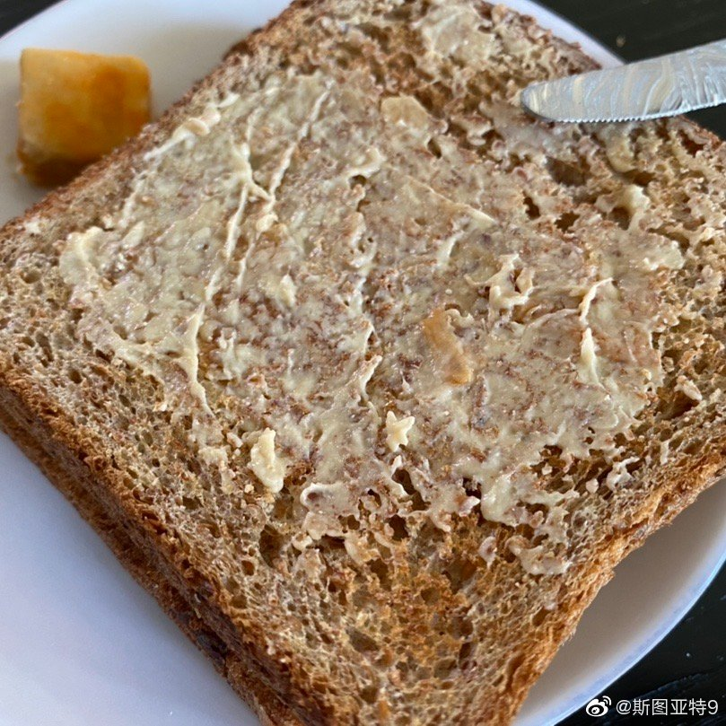

回复@kelephant9:荷包蛋也不错。当然不要忘了还可以加牛油果。欢迎收听牛油果烤面包播客！//@kelephant9:回复@斯图亚特9:感觉确实比较适合加butter@斯图亚特9:鸭肝不幸长毛了。只好吃酱豆腐抹面包片了😂 
回复@Gemini9_:我想了想，这种加盐不加糖的面包适合加脂肪（鹅肝之类），或者糖（果酱之类）。配纯咸味的调料如豆腐乳，味道不配。烤面包片脆脆的，也适合材质膏状的。豆腐乳这种水一样的也不太行。//@Gemini9_:你这可怕的品味！@斯图亚特9:鸭肝不幸长毛了。只好吃酱豆腐抹面包片了😂